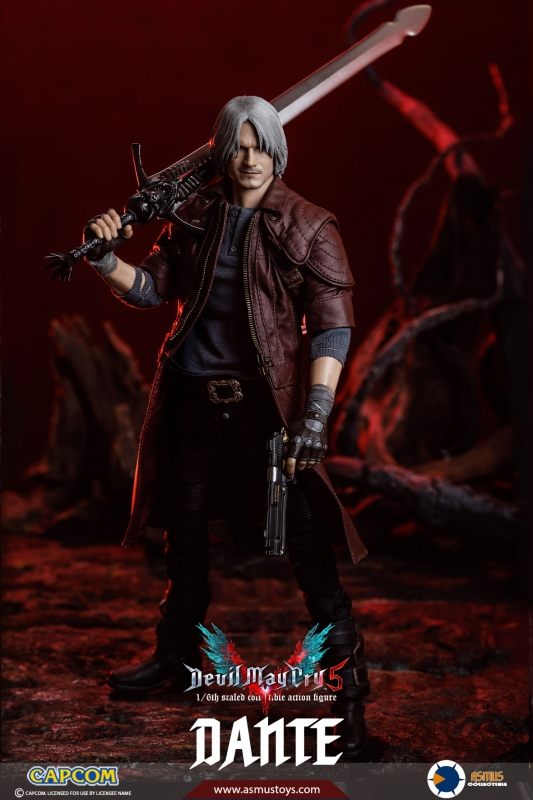

Dante - The Legendary Devil Hunter
Dante is one of the main characters in Devil May Cry 5.
He is a legendary devil hunter and the son of Sparda.
Dante is important to the story because he fights powerful demons and protects humanity.
He is also known for his humor,
confidence, and unique fighting style.
Key Dates
- 2001 — Dante first appeared in Devil May Cry.
- 2003 — Dante returned in Devil May Cry 2.
- 2005 — Dante became the main character in Devil May Cry 3.
- 2008 — Dante appeared in Devil May Cry 4.
- 2019 — Dante returned in Devil May Cry 5.
Interesting facts
- Dante is the son of the legendary demon Sparda.
- He is a skilled devil hunter who fights demons.
- Dante can use different weapons and fighting styles.
- He uses powerful Devil Trigger abilities in combat.

«A stylish fight is not just a victory, it is atrue art of overcoming oneself in a dynamic battle». — Цитата из игрового обзораDevil May Cry 5 official GamePlay Trailer:
Dante's Weapons and Fighting Styles
Dante's Combat Arsenal in Devil May Cry 5 Category Name Type Main Purpose Weapon Devil Sword Dante Sword Close-range attacks Weapon Ebony & Ivory Dual pistols Long-range attacks Weapon Balrog Gauntlets and greaves Close-range combat Weapon Cavaliere Motorcycle weapon Powerful melee attacks Style Trickster Fast movement and dodging Style Swordmaster Fighting style Special melee attacks Style Gunslinger Fighting style Special ranged attacks Style Royal Guard Fighting style Blocking and counterattacks Total categories 2 More information you can find in Wikipedia of Devil May cry 5.